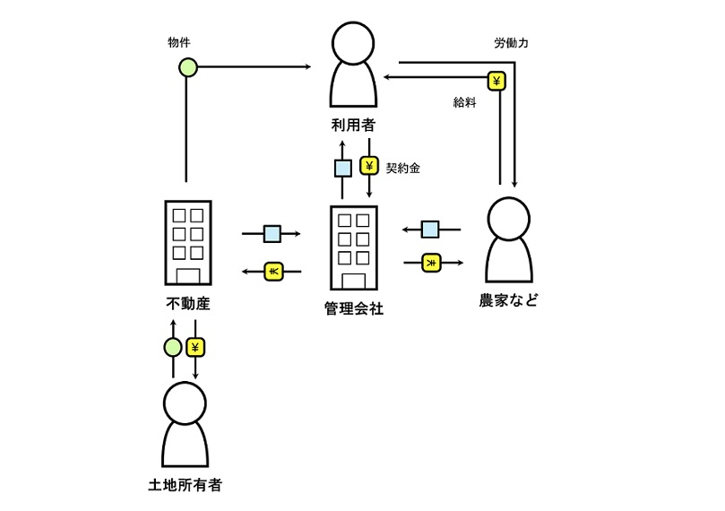

第2回 ビジネスの視覚化

地方の過疎化と少子高齢化を題材として考えた。その中で「地方の後継ぎの減少」と「空き家の増加」に目をつけた。
利用者は都心から地方に移り住みたい人。管理会社を通して住みたい物件ややりたい仕事を選ぶ。
住みたい物件は主に、空き家など今は使われていない物件。そうすることで空き家の減少を目指す。
やりたい仕事は主に、地方の高齢化を踏まえ、農業や伝統工芸など後継ぎが必要になる仕事から選ぶ。
そうすることで農業就業者の高齢化や伝統工芸の消滅を防ぐ。
ただただ地方の環境を良くするだけではなく、これらは都心への一極集中も防ぐことができる。
また地方に住みたくてもなかなか行動に示せない人への手助けにもなると考える。